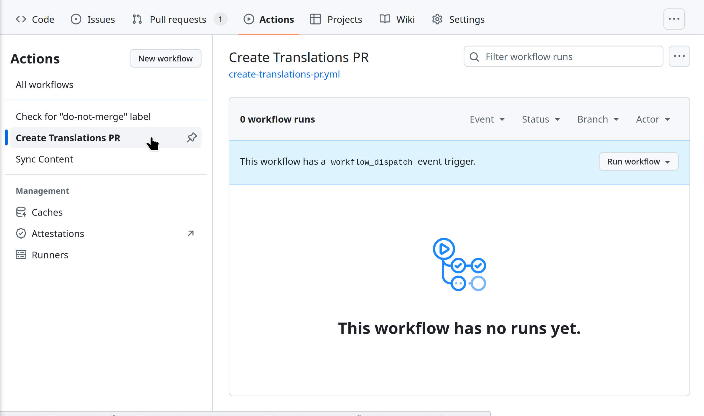
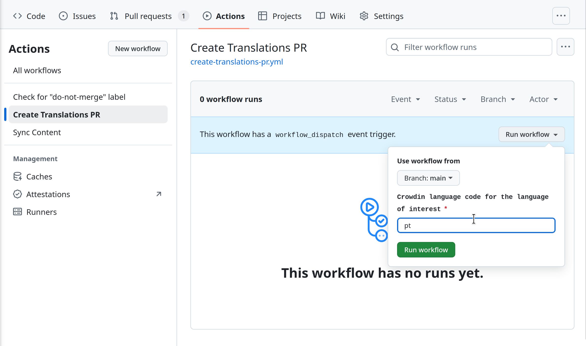
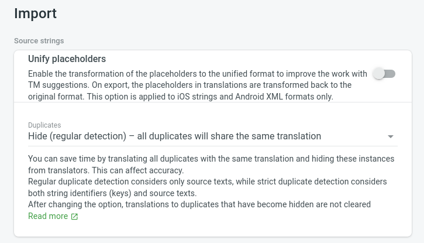

This page details existing patterns for setting up and deploying translations for project websites. As each project has their own set up, the patterns described here may not fit exactly, but they will help you understand the basic workflows.
At least some of the tasks described here rely on scripts from https://github.com/Scientific-Python-Translations/automations/.
Integration with Crowdin#
Crowdin provides GitHub integration tools to sync all translated content from the Crowdin web interface into project websites and vice-versa. However, a few adaptations are needed. The following steps describe what maintainers need to do to set up the integration. See for more details on this script.
Setting up Crowdin#
Create a Crowdin project for your repository and turn on synchronization between Crowdin and your source repo. If you planning on using the Scientific Python Crowdin workspace, please reach out to the Scientific Python translations team on discord for help. For more information, see Crowdin’s documentation.
To prevent extra activity in the original source repository, we recommend creating a separate repository for the translations under https://github.com/scientific-python-translations with a GitHub action to sync the translations to the original repository (see sync.yml for an example).
Announce your project to potential translators#
After your project is set up, you will have to add translators as members to your Crowdin project so they can start translating. The general best practice is to have two people per language (one translator, one reviewer) to ensure the quality of the translations. However, your translations will not be published until you approve them, so you can start with one translator and add a reviewer later.
You can find potential translators by reaching out in the #translation channel
on the Scientific Python Discord server.
Merging translations#
As translators work on the Crowdin platform, a Pull Request is automatically
created in the project repository. This PR should not be merged, as it
contains all translations for all languages (see
numpy/numpy.org#778 for an
example). If your website is set up through the Scientific Python Translations
org, this PR will have the do-not-merge label applied to it.
After translations for a language are completed and ready to be deployed, you should:
- Go to the repository corresponding to your project’s sources under https://github.com/Scientific-Python-Translations
- Go to the Actions tab
- Manually trigger the “Create translations PR” workflow, with the language code for your language of interest as input.


After these steps, a PR will be created to your website repo with the translations for the language you selected (see numpy/numpy.org#774 for an example.) This PR should be merged when you are ready to publish the translations.
Cleaning up#
After merging the translations PR, the Crowdin service branch (by default, named l10n_main) will have merge conflicts with main. To fix this, delete the Crowdin service branch. Crowdin will automatically recreate the service branch with merge conflicts resolved. This same process can also be used to resolve merge conflicts if translations are updated outside of Crowdin.
Automation details#
Once a GitHub repository has been synced to Crowdin using the Scientific Python
set up, the
create_branch_for_language.sh script
is used to create a new branch including all (and only) commits from Crowdin’s
branch for a particular language of interest. This script is useful because:
-
Crowdin will keep commits for all the available languages under translation in the same branch. However, we prefer to be able to create pull requests for one language at a time to keep Pull Request reviews smaller and easier to manage.
-
There are times when translations must be edited manually (outside of Crowdin) due to incorrect segmentation of the content into strings for translation. Crowdin’s branch can only be edited through the Crowdin UI, and commits pushed to it outside of Crowdin will be lost when the branch is synced. By creating a new branch with only the commits we are interested in, we can bypass this limitation.
Ideally you will not have to run the create_branch_for_language.sh script
directly, but can include it as part of your website deployment process (see,
for example, numpy/numpy.org#772)
To prevent future conflicts with the GitHub/Crowdin integration, it is important that you set your translations to duplicate strings to be an exact match. To do this, navigate to your project’s Settings in Crowdin, select Import and under “Source strings” -> “Duplicates” choose “Hide (regular detection)”.

Setting up a language switcher#
This work is in progress - follow (issue #) for details.
Scientific Python Hugo Theme#
PyData Sphinx Theme#
This work is in progress - follow pydata/pydata-sphinx-theme#507 for details.
Known limitations#
Missing translations#
Translations may not always be up to date for items such as news items and release announcements. In this case, your project can decide what to do with these items (for example, keep them in English or hide them from the deployed site.)